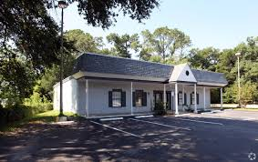

Our New Home on
Fairfield Drive
God is doing something wonderful at Grace — and you're a part of it.
A Season of Growth and Faith
For years, Grace Bible Baptist Church has called 7201 Klondike Rd home — meeting faithfully in the white building in the back, trusting God for the future. That trust is now bearing fruit.
We are in the middle of an exciting building project at 4805 W Fairfield Drive, Pensacola — a new permanent facility that will allow us to serve our congregation and community more effectively for generations to come.
This project is possible only because of the faithfulness of God and the generosity of this church family. Every prayer, every gift, every hour volunteered is a brick in this building — and a testimony to what God can do through willing hearts.
"For my thoughts are not your thoughts, neither are your ways my ways, saith the Lord."
— Isaiah 55:8–9 (KJV)We covet your prayers as we move forward. If you'd like to give specifically to the Building Fund, you can do so online through ChurchTrac. And if you'd like to see the site or learn more, please reach out — we'd love to share the vision with you in person.
Find Us
📍 Current Meeting Location
7201 Klondike RdPensacola, FL 32526
White building in the back.
Sundays 9:45 AM & 10:45 AM
Wednesdays 6:45 PM
🏗 New Building Site (Under Construction)
4805 W Fairfield DrPensacola, FL
Construction is underway. This will become our permanent home.
Be Part of What God Is Building
Your gift to the Building Fund is an investment in the ministry for decades to come.